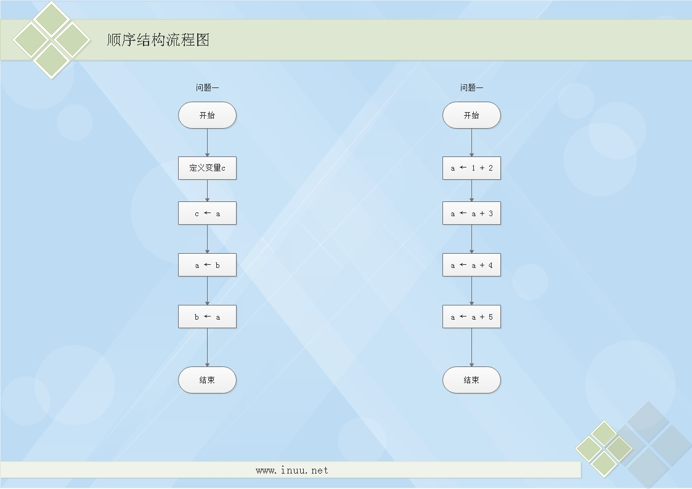
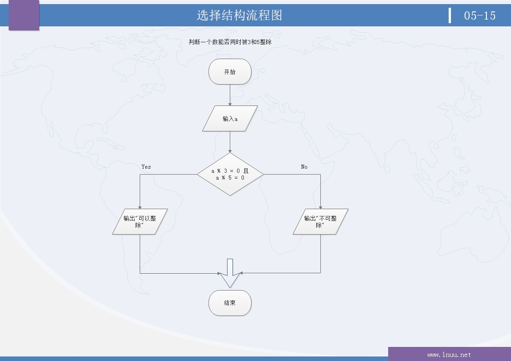
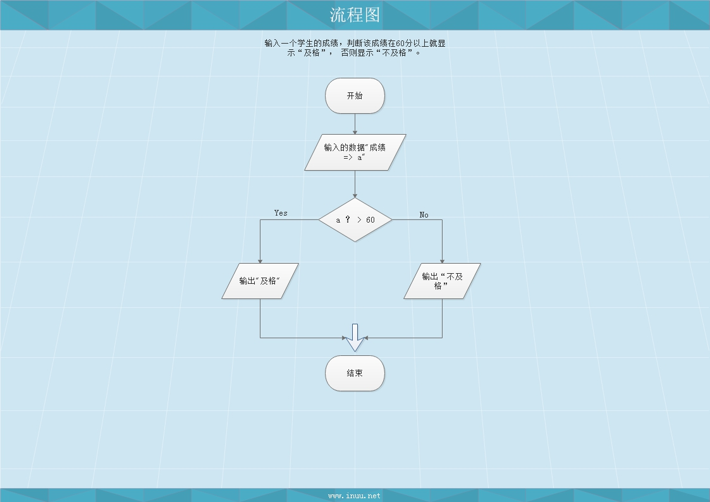

大家晚上好，最近忙每天忙于项目没有时间更新自己的博客，时间就是海绵嘛硬挤挤就是有的，咂看标题" 流程图 "，编程界的一个不可或缺的技能，特别是在做复杂的逻辑的时候要处理好每一步的关系，在数据中讲就是数据之间的关联关系，或者关联模型等，通俗点也就是父子，母子等关系。
首先给大家介绍几款画流程图的软件：亿图图示，VISIO，百度脑图（在线使用），office等等，有兴趣的伙伴选择一款合适的去网上下载，有破解版正版.......废话不多进入今天的主题。
流程图：
解题思路（算法）
问题一：将变量a与b中的值互换
解题思路：
1、设一个临时变量c
2、将a的值赋给c
3、将b的值赋给a
4、将c的值赋给b
问题二：计算1+2+3+4+5的和。
解题思路：
1、计算1+2的和等于3
2、计算3+3的和等于6
3、计算6+4的和等于10
4、计算10+5的和等于15
顺序结构流程图

程序1
计算1+2+3+4+5的和
/*4_1_求1+2+3+4+5的和打印在屏幕上*/
#include <stdio.h>
main()
{
int a;
a = 1 + 2;
a = a + 3;
a = a + 4;
a = a + 5;
printf("a的值是%d", a);
system("pause");
}
选择结构流程图
问题：判断一个数能否同时被3和5整除

※不一定一个图框要对应一行代码，也可以直接写文字思路。
※画图时尽量不要交叉
※流程图为了美观，有时图框可以画成并排的，而程序不可能并排执行，在流程图转化为程序时要注意这点。
程序2
判断一个数能否同时被3和5整除
/*4_2_判断一个数能否被3和5能整除*/
#include <stdio.h>
main()
{
int a;
printf("请输入值:");
scanf_s("%d", &a);
if (a % 3 == 0 && a % 5 == 0) { //a 可以让3整除并且可以让5整除
printf("可以整除\n");
}
else
{
printf("不可以整除\n");
}
system("pause");
}
作业
画流程图并写程序：输入一个学生的成绩，判断该成绩在60分以上就显示“及格”， 否则显示“不及格”。

/*4_3_画流程图并写出成绩，输入一个学生的成绩，判断该成绩在60分以上显示“及格”，否则显示“不及格”*/
#include <stdio.h>
main()
{
//double a;
float a; //输入的分数
printf("请输入你的成绩：\n");
/*scanf_s("%lf", &a);*/
scanf_s("%f", &a);
if (a >= 60) {
printf("及格\n");
}
else
{
printf("不及格\n");
};
system("pause");
}
有问题请在留言区！ 流程图中的" www.inuu.net "网站，本人正在搭建中，暂时无法访问，敬请期待！谢谢